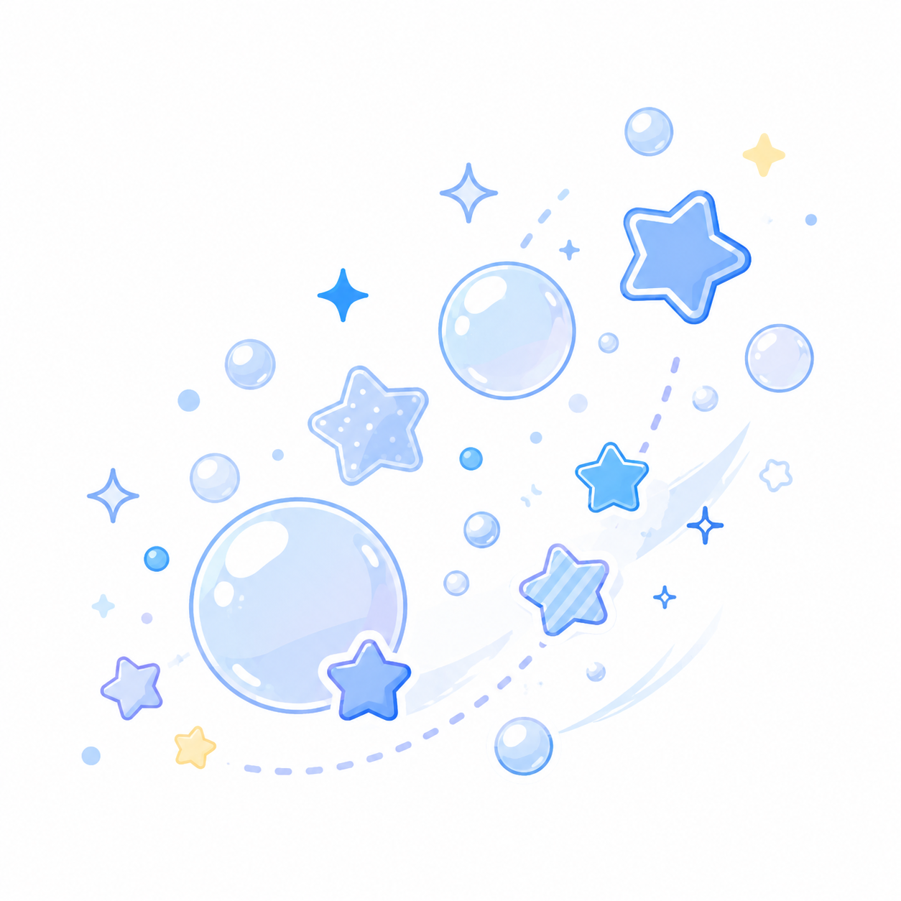
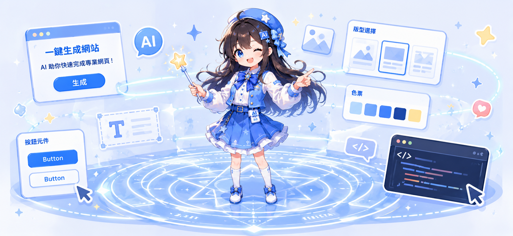

嗨！我來幫你想清楚✨
AI 網頁專案
生成小幫手
不用懂程式，只要告訴我你想做什麼，
我幫你整理成一份能直接給 AI 用的需求單！
Step 1–5
回答五個
簡單問題
簡單問題
AI 整理
幫你變成
一份需求單
一份需求單
複製貼上
直接餵給
ChatGPT / Claude
ChatGPT / Claude
1
你是誰？在做什麼？
例如：我是賣手工皂的小品牌 / 我是接案的平面設計師 / 我在教小朋友畫畫
2
你希望訪客來了之後做什麼？
3
你喜歡什麼感覺的風格？
先抓主要風格即可；顏色會在最後一步另外詢問。
本站不會讀取該網站，只會把網址附在最後產生的需求單中。
4
網頁裡要放哪些東西？
預約、聯絡表單與地圖通常需要串接外部服務；本工具會將它們列入需求，不會自動完成帳號申請或服務設定。
需要聯絡表單？可先閱讀 「讓網頁會收資料」教學，了解 Google Sheets 與 Apps Script 的做法。
5
確認製作條件
例如：使用 Calendly 預約、嵌入 Google 地圖、不能使用動畫。請寫具體條件，不必寫成完整文章。

幫你整理需求單 ✨
按下按鈕，在瀏覽器內整理成一份可以直接給 ChatGPT / Claude 的 prompt，不需 API Key
你的網頁需求 Prompt（複製後貼給 AI）
✓ 已複製！
💡 想更清楚看到你的網站長什麼樣子嗎？
🗺️ 你的網站訪客旅程
訪客進到你的網站，會按照這個順序走 ↓